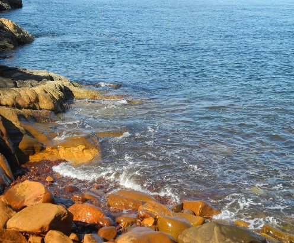
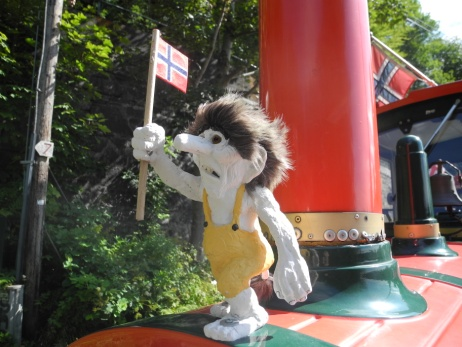

Бог наделил эту страну могущественными горами, позволяющими развивать горнолыжный туризм, и манящими таинственностью фьордами, богатыми рыбой горными реками - вот основные притягательные силы норвежского туризма. В эту страну хочется приезжать снова и снова. Норвегия – это место с величественными пейзажами , которых не встретишь ни в одной другой стране. Это море и горы, но не такие, как на Кавказе или в Турции, а совсем другие. Норвежские фьорды , водовороты и водопады нельзя спутать ни с чем. Большая часть Норвегии -это скалы, поэтому земля используется очень рационально.
Характер норвежцев, по-видимому, тоже формировался морской стихией и мрачным величием горной страны. Про норвежцев можно точно сказать, что они обладают нордическим характером. Они очень спокойные и уравновешенные, причем спокойны даже дети. Они практически не плачут и не капризничают!!!! С детьми здесь разговаривают очень спокойно, взрослые никогда не разговаривают на повышенных тонах ни с кем. Что еще запомнилось в Норвегии? Тролли и викинги. Они везде – в магазинах и на рынках, в офисах и на улице, в кафе и барах, в музеях и в домах. Норвегия- страна сказочных троллей и древних викингов, от них не спрячешься никуда.